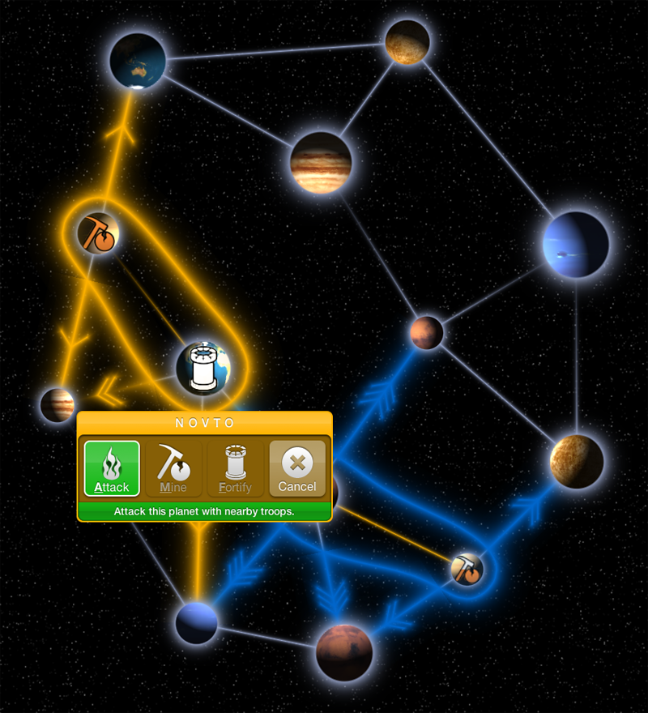
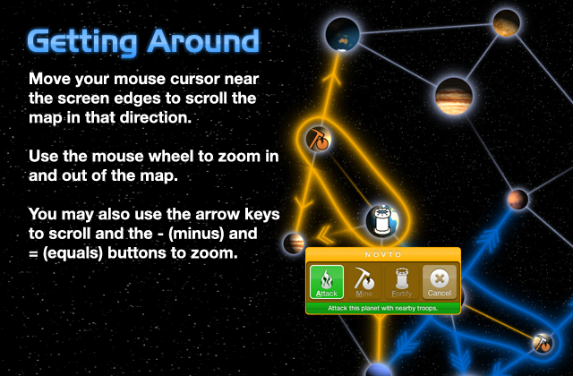
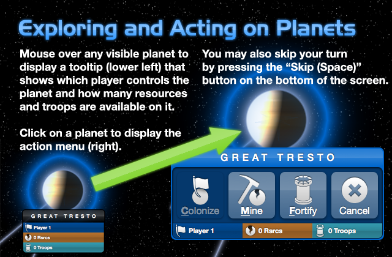
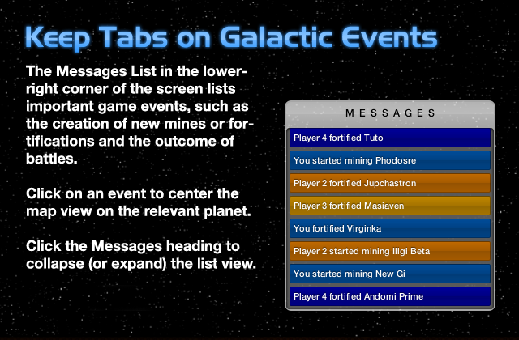
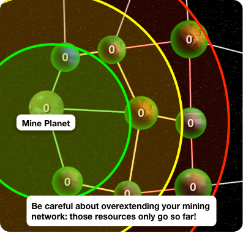
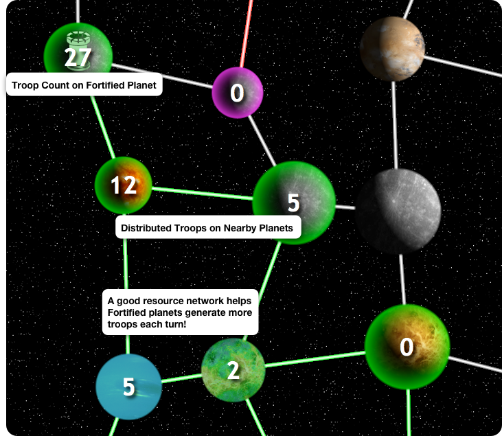
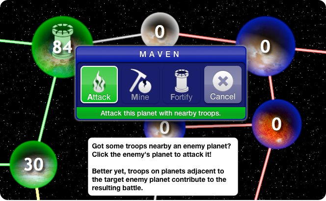

Welcome to Space Wars!
Space Wars, a game of interplanetary exploration and conquest! Here's the setup: it's you against the three other computer-controlled players in a fight to control the entire galaxy, i.e. the playing field.
You'll win it all if you conquer each and every one of the computer players' planets. Conversely, you'll lose if one of the computer players captures your very last planet.
Getting Around
Exploration starts off simple enough. The playing field is represented by a graph of planets, with each edge indicating a path from one planet to another. Planets colonized by a particular player have a glowing boundary around them. The planets surrounded by a light blue boundary are yours!
Move around the planet map by moving your mouse cursor towards the edges of the browser window. The camera view will automatically scroll the map for you. You can also use the mouse wheel (or a scrolling gesture) to zoom in and out of the map.
Exploring and Acting
Non-glowy planets are uncolonized, so they're yours for the taking! Just click on an uncolonized planet and then click the Colonize button from the Action menu.
Once a planet has been colonized, you can strategize its role in your exploration and conquest with Mines and Fortifications (Forts for short).
Messages
Mining Planets
Gain resources by building a Mine on a planet—simply click on a colonized planet and choose the Mine button to construct one.
Mined planets distribute resources across your planetary network, so nearby planets will receive a good supply resources, while distant planets may receive little or no resources.
Fortifying Planets
Resources are used to build and maintain troops on Fortified planets. Troops allow you to defend your planets from attack or conquest by other players. The number drawn on top of each planet displays the number of troops available to attack or defend from a given planet.
Fortified planets build new troops every turn, but only if the planet is connected to mining planets. Smartly managing both base types is the key to success!
Additionally, fortified planets distribute their military presence across neighboring colonized planets. You can effectively defend or attack from multiple unfortified planets with a small set of connected, neighboring fortified planets.
Attacking Planets(!)
Inevitably players are going to start bumping elbows…there are only so many planets to go around. If you have a colonized planet with available troops near an enemy planet, click on the enemy planet and choose Attack! Depending on the outcome, you may:
- Completely eliminate the enemy's troops, letting you colonize the planet on your next move!
- Automatically colonize the planet if there are no enemy troops there.
- Lose the battle, lose all your troops, and risk losing your own planet!
That should be everything! Thanks so much for playing (and reading).